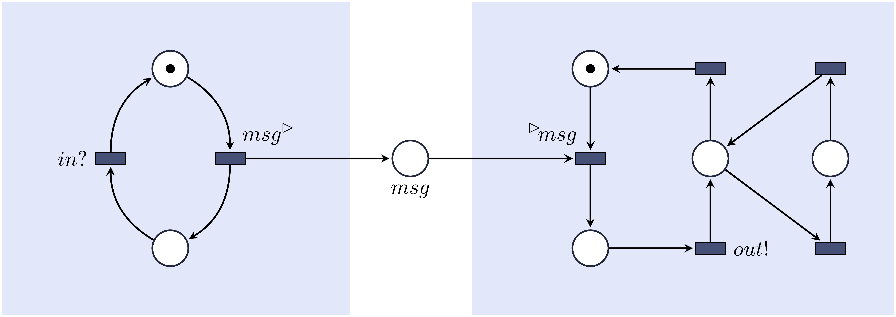

name: inverse layout: true class: center, middle, inverse --- # Modal and Component-Based System Specifications ##Mikael Harkjær Møller ### Department of Computer Science, Aalborg University [Monday, 16th of December] ??? # Welcome --- ## What is the problem? --- layout: false .left-column[ ### Software is everywhere ] .right-column[ Software is no longer just PC programs, and it has not been that for years. - It is controlling indoor climate, - helping you navigate in traffic, - securing and letting you access you home and - washing your clothes! .illustration[  ] ] --- .left-column[ ### Software is everywhere ### Also in critical systems ] .right-column[ Software is even something we need to trust with our lives, as it is also being used in safety-critical sytems. - Software is also used in space programs, - to steer and brake cars, trains, flights, - and to assist air traffic controllers.. .illustration[  ] ] --- .left-column[ ### Software is everywhere ### Also in critical systems ### But it can still break down ] .right-column[ However, just as computer programs such systemst might crash or fail. - Ariane 5 [1996] -- exploded after 37 seconds. - Toyota Prius [2010] -- 100.000+ needed an ABS update. - L.A. Air Route Traffic Control Center [2004] -- Lost all radio contact. .illustration[  ] ] --- template: inverse ## What can we do about it? --- .left-column[ ### Formal Verification ] .right-column[ Formal Verification is a class of techniques that can be used as to prove correctness of a system. Each of them relies on three components: - A formal specification of the system analysed. - A set of formal requirements for the system. - A mathematically-based method that can analyse the system and requirement. .illustration[  ] ] ??? Formal Methods --- name: model-check .left-column[ ### Formal Verification ### Model Checking ] .right-column[ Model Checking is a formal verification method, that systematically will explore all possible configurations of a system model to verify that all of them meet the given requirements. ].right-column-cont[ .model[ System ] .spec[ Requirements ] ] --- name:model-check2 template:model-check .right-column-cont[ .implies[ $\downarrow$ ] .implies[ $\downarrow$ ] .model[ Model ] .spec[ Logic Formula ] ] --- name:model-check3 template:model-check2 .right-column-cont[ .implies[ $\downarrow$ ] .implies[ $\downarrow$ ] .model-checker[ Model Checker ] ] --- name:model-check4 template:model-check3 .right-column-cont[ .model-checker-implies[ $\downarrow$ ] .answer[ Yes or No ] ] --- template: inverse ## Doesn't that solve our problems? --- .left-column[ ### Abstraction ] .right-column[ Even simple systems can have a complex logic inside. Which makes model checking hard or impossible. - Model Checking on a abstracted model. - Does not prove anything for the real system. - Model must express all details of the system. .illustration[  .abstraction-relation[ ## $\leftrightarrow$ ] ] ] ??? Complexity is a major problem in model checking. --- .left-column[ ### Abstraction ### Usability ] .right-column[ For model checking to be really helpful it should be well integrated with system development processes. - Developing a formal system model can be time consuming. - System specifications evolve throughout the design process. - A design process can lead to a series of products. .illustration[  ] ] --- template: inverse ## Didn't anyone work on this before? --- name:mts layout:true .left-column[ ### Modal Transition Systems ] .right-column[ Modal Transition Systems *(MTS)* is a modelling framework that is more suited for **model-based development**, as it support **model refinement**. ] --- template:mts .right-column-cont[ .mts-figure[  ] ] ??? Loose specification --- template:mts .right-column-cont[ .mts-figure[  ] ] --- template:mts .right-column-cont[ .mts-figure[  ] ] ??? Implementation LTS --- name:mts-prob layout: false .left-column[ ### Modal Transition Systems ] .right-column[ MTSs are not always precise enough. They allow too many implements as *valid* implementations. .figure[ .car-wash-ex[  ] ] ] --- template:mts-prob .right-column[ .figure[ .car-wash-imp[    ] ] ] --- name:dmts layout: false .left-column[ ### Modal Transition Systems ### Disjunctive MTS ] .right-column[ Several extensions of MTS have been introduced to address these problems. **Disjunctive Modal Transition System** is one of them. .figure[ .car-wash-ex[  ] ] ] --- template:dmts .right-column[ .figure[ .car-wash-imp[    ] ] ] --- name:ots-ex layout: false .left-column[ ### Modal Transition Systems ### Disjunctive MTS ### Transition System with Obligations ] .right-column[ Another extension is the **Transition Systems with Obligations**, where modalities are expressed by positive *logic obligations*. .figure[ .ots-ex[  ] ] ] ??? Only one transition relation. We still draw must arrows as solid lines --- template:ots-ex .right-column[ .figure[ .car-wash-imp[    ] ] ] --- name: last-page template: inverse ## So what did you do to fix this? --- name:bmts-ex layout: false .left-column[ ### Modal Transition Systems ### Disjunctive MTS ### Transition System with Obligations ### Boolean MTS ] .right-column[ We started by defining **Boolean Modal Transition Systems** a simple extension of OTS. Where we allow arbitrary satisfiable boolean formulas. .figure[ .ots-ex[  ] ] ] --- template:bmts-ex .right-column[ .figure[ .car-wash-imp[    ] ] ] --- name:pmts-ex layout: false .left-column[ ### Modal Transition Systems ### Disjunctive MTS ### Transition System with Obligations ### Boolean MTS ### Parametric MTS ] .right-column[ In order to model persistence we add a set of *parameters* that can be used in the obligation functions. .figure[ .ots-ex[  ] ] ] ??? Paremeters can be seen as a switch you can turn on or off. --- template:pmts-ex .right-column[ .figure[ .car-wash-imp[    ] ] ] --- .left-column[ ### Modal Transition Systems ### Disjunctive MTS ### Transition System with Obligations ### Boolean MTS ### Parametric MTS ] .right-column[ .definition[ # Definition A *parametric MTS (PMTS) over an action alphabet $\Sigma$ is a tuple $(S,T,P,\Phi)$ where - $S$ is a set of **states** - $T \subseteq S \times \Sigma \times S$ is a **transition relation**, - $P$ is a finite set of parameters, and - $\Phi : S \to \mathcal B((\Sigma \times S) \cup P)$ is a satisfiable **obligation function** over the atomic propositions containing outgoing transitions and parameters. We implicitly assume that whenever $(a,t) \in \Phi(s)$ then $(s,a,t) \in T$. ] Note: MTS, DMTS, OMTS and BMTS are all subclases of PMTS. ] --- name:pmts-ex-good layout: false .left-column[ ### Modal Transition Systems ### Disjunctive MTS ### Transition System with Obligations ### Boolean MTS ### Parametric MTS ### Modal Refinement ] .right-column[ Modal refinement is defined along the same lines as for standard MTS. .figure[ .ots-ex[  ] ] ] --- template:pmts-ex-good .right-column[ These are the valid implementations: .figure[ .car-wash-imp-good[   ] ] ] ??? Complexity of modal refinement from P-complete to Pi-p-4 --- name:pmts-ex-good layout: false .left-column[ ### Modal Transition Systems ### Disjunctive MTS ### Transition System with Obligations ### Boolean MTS ### Parametric MTS ### Modal Refinement ### Logic for PMTS ] .right-column[ Furthermore, we define a new requirement logic for PMTS, that can determine for which parameters the model will met the requirement. .illustration-mid[  ] **Must** always perform a car wash: $$ \langle \mathtt{wash} \rangle \mathbf{tt} $$ <!-- Holds for $\{\mathtt{gold}\}$ and $\emptyset$. --> **Must** always wax car after **any** car wash: $$ \[\mathtt{wash}\] \langle \mathtt{wax} \rangle \mathbf{tt} $$ <!-- Holds for $\{ \mathtt{gold} \}$ --> ] ??? We define a new logic for PMTS to do this based on Hennesy Milner Logic with Recursion. --- template:inverse ## But how much does a car wash cost? --- layout:false .left-column[ ### Time and Cost ] .right-column[ We extended the MTS model with time and cost and thereby reason about the investment cost in the system, but also the average running cost. - Add stepwise refineable **time duration intervals** to transitions, and - a price scheme, with **hardware requirements**, **hardware cost** and **running expences** of the different transitions. The goal is then to decide if there is an implementation within a given budget. ] --- name:bmts-cost layout:true .left-column[ ### Time and Cost ### Durations ] --- template:bmts-cost .right-column[ BMTS specification: .illustration-mid[  ] ] --- name:bmts-cost2 template:bmts-cost .right-column[ BMTS specification with durations: .illustration-mid[  ] - $[1,2]$ is an **uncontrollable** interval - $\langle 1,4 \rangle$ is a **controllable** interval, that can be refined. ] --- template:bmts-cost .right-column[ BMTS specification with durations: .illustration-mid[  ] - $[1,2]$ is an **uncontrollable** interval - $\langle 1,4 \rangle$ is a **controllable** interval, that can be refined. $\langle 1,4 \rangle \quad \geq \quad \langle 2,4 \rangle \quad \geq \quad [2,4]$. .illustration-mid[  ] ] ??? Uncontrollable like must, cannot be refined --- name:bmts-cost2 layout:true .left-column[ ### Time and Cost ### Durations ### Price Scheme ] --- template:bmts-cost2 .right-column[ BMTS specification with durations: .illustration-mid[  ] Price Scheme: .illustration-mid[  ] Investment cost (gold) = 150. Running cost: either 50 or 150. ] --- layout:false .left-column[ ### Time and Cost ### Durations ### Price Scheme ### Cost ] .right-column[ Specification and Price Scheme: .illustration-half[   ] Implementation and cost: .cost-img[  ] .cost[ Investment Cost $= 50$ Running Cost $= \frac{2 \cdot 10 + 2\cdot 10}{2+2} = 10$ ] .cost-img[  ] .cost[ Investment Cost $= 150$ Running Cost $= \frac{2 \cdot 10 + 4 \cdot 5 + 2\cdot 10}{2+4+2} = 7.5$ ] ] --- layout:false .left-column[ ### Time and Cost ### Durations ### Price Scheme ### Cost ### Problem ] .right-column[ .definition[ # Decision Problem - Given an BMTS with durations specification $S$, - a dual-price scheme, - an upper-bound $\mathtt{max_{investment}}$ for the investment cost and - an upper bound $\mathtt{max_{running}}$ on the running cost, does there exist an implementation $I \leq S$ such that - investment cost of I $ \leq \mathtt{max_{investment}}$ and - running cost of I $\leq \mathtt{max_{running}}$. ] .result[ # Result We prove that the decision problem is an NP-complete problem. ] ] --- name: last-page template: inverse ## How about the components mentioned in your title? --- layout: false .left-column[ ###Component-based Design ] .right-column[ Component-based development is a popular method when designing software systems, as it is a method that has many advantages. - Separation of concern. - Reuse-ability is high. - Collaborative implementation - Consists of simpler components. ] .illustration[*insert module figure*] ??? - Also beneficial from a formal verification perspective. --- layout: false .left-column[ ###Component-based Design ] .right-column[ In component-based systems is it important that the composition of modules is correct. Meaning that the components fit together such that they can communicate properly. - E.g. for synchronising components. - Communication can be synchronous or asynchronous. - Different choice of medium stack, FIFO or pool of messages. - Analysis of communication is important to avoid errors - Decidable communication properties would be nice to have .illustration[*insert communication figure*] ] --- name:composition layout: false .left-column[ ### Component-based Design ### Composition ] .right-column[ There are mainly two types of composition, synchronous and asynchronous. .center[] ] --- template:composition .right-column-cont[ Syncronous composition:<br> ] --- template:composition .right-column-cont[ Syncronous composition: Asyncronous composition: ] ??? Channel is a infinite pool of messages; Could also be a FIFO buffer or Lossy Channel --- template: inverse ## So what can one say about the communication. --- layout:false .left-column[ ### Component-based Design ### Composition ### Communication Properties ] .right-column[ Communication properties specifies certain requirements of the communication between components. - Specified reception [1983, Brand, Zafiropulo] - Compatibility [2005, Alfaro, Henzinger] - Buffered Compatibility [2010, Hennicker et al.] .illustration[ *Insert miscommunication figure* ] ] ??? **Specified Reception** All input must be handled in all states **Compatibility** Sync, recv must be ready when sender can send. **Buffered Compatibility** Adapted to async, any message on a channel must eventually be taken. Only considered for finite systems. --- template: inverse ## So did you go infinite, and how? --- name:petri layout:true .left-column[ ### Petri Nets ] .right-column[ *Labelled Petri Nets* is a specification formalism, that with a finite representation can express an infinite state system. ] --- template:petri .right-column[ .center[ <img src="images/component-tikz-4.png" alt="Drawing" style="width: 250px;"/> ] ] ??? Finite directed graph Places, Transitions, Arcs --- template:petri .right-column[ .center[ <img src="images/component-tikz-5.png" alt="Drawing" style="width: 250px;"/> ] Trace: .trace[ $m_0$ ] ] ??? Tokens distributed, marking enabling transitions Initial marking. --- template:petri .right-column[ .center[ ] Trace: .trace[ $m_0 \xrightarrow{b} m_1$ ] ] ??? --- template:petri .right-column[ .center[ <img src="images/component-tikz-5.png" alt="Drawing" style="width: 250px;"/> ] Trace: .trace[ $m_0 \xrightarrow{b} m_1 \xrightarrow{c} m_2$ ] ] ??? Note that $m_2 = m_1$. --- template:petri .right-column[ .center[ ] Trace: .trace[ $m_0 \xrightarrow{b} m_1 \xrightarrow{c} m_2 \xrightarrow{a} m_3$ ] ] --- name:aiopn layout:true .left-column[ ### Petri Nets ### Asynchronous I/O Petri Nets ] .right-column[ Our goal is to study general properties of asynchronous communication. Therefore we define *Asynchronous I/O Petri Nets*. ] --- template:aiopn .right-column[ Two primitive components before composition: .center[ ] Their underlying state space: .center[ ] ] ??? --- template:aiopn .right-column[ Two primitive components *after* composition: .center[ ] Its underlying state space: .center[ ] ] ??? Related to Open Petri Nets Interleaving semantics (vs. unfolding/branching) --- template:false layout:false .left-column[ ### Petri Nets ### Asynchronous I/O Petri Nets ] .right-column[ .definition[ # Definition An *asynchronous I/O-Petri net* (AIOPN) is a tuple $\mathcal{M} = (\mathcal{N}, \mathcal{C}, \Sigma$) such that - $\mathcal{N}$ is a **labelled Petri net** with places $P$ and transitions $T$, - $\mathcal{C}$ is a finite set of **channels**, - $\mathcal{C} \subseteq P$, i.e. each channel is a place, - $\Sigma = \mathsf{in} \uplus \mathsf{out} \uplus \mathsf{com} $ is an **I/O-alphabet** over $\mathcal{C}$, - for all $a \in \mathcal{C}$ and $t \in T$, $$W^-(a,t) = \begin{cases} 1 &\text{ if } \lambda(t) = ~^\rhd a, \\\0 &\text{ otherwise } \end{cases}$$ $$W^+(a,t) = \begin{cases} 1 &\text{ if } \lambda(t) = a^\rhd,\\\ 0 &\text{ otherwise} \end{cases}$$ - for all $a \in \mathcal{C}$, $m^0(a) = 0$. ] ] ??? Primitive components C is empty and com is empty --- .left-column[ ### Petri Nets ### Asynchronous I/O Petri Nets ### Channel Consuming ] .right-column[ .definition[ #Definition An AIOPN is *Consuming* if there are some messages on a channel $c$, then we can **autonomously** reach a marking where $\xrightarrow{~^\rhd c}$. ] .center[ ] ] ??? Simplest Consuming - possible that it eventually can take it, Autonomous - Means without input from environment --- .left-column[ ### Petri Nets ### Asynchronous I/O Petri Nets ### Channel Consuming ### Strongly Consuming ] .right-column[ .definition[ #Definition An AIOPN is *Strongly Consuming* if there are some messages on a channel $c$, then we can <strike>autonomously reach a marking where</strike> **immediately** $\xrightarrow{~^\rhd c}$. ] .center[ ] ] ??? Strong Consuming - must take it NOW, not the case for example --- .left-column[ ### Petri Nets ### Asynchronous I/O Petri Nets ### Channel Consuming ### Strongly Consuming ### Necessarily Consuming ] .right-column[ .definition[ #Definition An AIOPN is *Necessarily Consuming* if there are some messages on a channel $c$, then **on all weakly fair runs** we can autonomously reach a marking where $\xrightarrow{~^\rhd c}$. ] .center[ ] ] ??? Necessarily Consuming - All weak fair runs Weak fair, always enabled must be taken infinitely often. --- .left-column[ ### Petri Nets ### Asynchronous I/O Petri Nets ### Channel Consuming ### Strongly Consuming ### Necessarily Consuming ### All Properties ] .right-column[ We have developed a set of 14 channel properties. .center[ <img src="images/prop-rel.png" alt="Drawing" style="width: 600px;"/> ] We prove all properties are decidable. Our proofs rely on: - appropriate transformation of nets, - decidability of reachability and home space problems, - effective backward analysis for upward closed marking sets, - decidability of weak fairness. ] ??? Will not say much here, we used combination of known techniques. --- name:incremental-d layout:true .left-column[ ### Asynchronous I/O Petri Nets ### Channel Consuming ### Strongly Consuming ### Necessarily Consuming ### All Properties ### Incremental Design ] .right-column[ We prove that these channel properties can be utilized in an incremental design. ] --- template:incremental-d .right-column[ .incremental[ .center[ <img src="images/components-beamer-tikz-0.png" alt=""> ] ] ] ??? --- template:incremental-d .right-column[ .incremental[ .center[ ] ] ] ??? --- template:incremental-d .right-column[ .incremental[ .center[ <img src="images/components-beamer-tikz-2.png" alt=""> ] ] .result[ #Result Let $\pnN$ and $\M$ be two composable AIOPNs with shared actions $\Sigma\_\pnN \cap \Sigma\_\M$ and let $P$ be an arbitrary channel property but wholly emptying. If both $\pnN$ and $\M$ have property $P$ and if $\pnN \oplus\_{pn} \M$ has property $P$ with respect to the new channels $\Sigma\_\pnN \cap \Sigma\_\M$, then $\pnN \oplus\_{pn} \M$ has property $P$. ] ] ??? --- name: last-page template: inverse ## But what about the modalities, did we loose them? --- layout:false .left-column[ ### All together ] .right-column[ Until now we been focused on two different formal models. We will now put it all together, and add some ingredients to reach our goal. Our goal is to have a formalism that support: - Infinite state systems → Petri nets - Loose specifications → modal transitions (may, must) - Observational abstraction → hiding and $\tau$-transitions - Refinement correctness → weak modal refinement - Communication correctness → channel properties - Decidability results → Petri nets - Modular and incremental verification ] --- name:maiopn layout:false .left-column[ ### All together ### Modal AIOPNs ] .right-column[ We start by adding modalities to our Asynchronous I/O Petri Nets. This is done simply by having may and must transitions .center[ <img src="images/component-tikz-11.png" alt="" style="width:200px"> ] ] --- template:maiopn .right-column-cont[ We would like this to be a correct refinement. .center[ <img src="images/component-tikz-12.png" alt="" style="width:400px"> ] ] --- name:maiopn2 layout:false .left-column[ ### All together ### Modal AIOPNs ### Hiding ] .right-column[ We need to encapsulate communication on internal channels. We do this by a hiding step. .center[ <div style="width:530px;margin-left:50px;"><img src="images/component-tikz-12.png" alt="" style="width:210px;margin-right:10px;float:left;"> <div style="float:left; line-height: 150px;height: 150px;widht:10px"> Hiding → </div> <img src="images/component-tikz-13.png" alt="" style="float:left;width:200px;margin-left:20px;"></div> ] ] --- template:false layout:false .left-column[ ### All together ### Modal AIOPNs ### Hiding ### Weak Modal refinement ] .right-column[ We need to encapsulate communication on internal channels. We do this by a hiding step. .center[ <div style="width:530px;margin-left:50px;"><img src="images/component-tikz-12.png" alt="" style="width:210px;margin-right:10px;float:left;"> <div style="float:left; line-height: 150px;height: 150px;widht:20px"> Hiding → </div> <img src="images/component-tikz-13.png" alt="" style="float:left;width:200px;margin-left:20px;"></div> ] ] .right-column[ We now define a **weak modal refinement** that allow refinements to be *observatinal*. .center[ <div style="width:530px;margin-left:50px;"> <img src="images/component-tikz-11.png" alt="" style="width:210px;margin-right:10px;float:left;"> <div style="float:left; line-height: 150px;height: 150px;widht:20px">$\Large \leq^*$ </div> <img src="images/component-tikz-13.png" alt="" style="float:left;width:200px;margin-left:20px;"> </div> ] ] --- template:false layout:false .left-column[ ### All together ### Modal AIOPNs ### Hiding ### Weak Modal refinement ### Channel Properties ] .right-column[ In order to adapt the channel properties we defined earlier we need to take the modalities and internal actions into account. .definition[ #Definition A Modal AIOPN is *Consuming* if there are some messages on a channel $c$, then we **must** be able to autonomously reach a marking where $\xrightarrow{~^\rhd c}$. ] .illustration[  ] ] --- template:false layout:false .left-column[ ### All together ### Modal AIOPNs ### Hiding ### Weak Modal refinement ### Channel Properties ] .right-column[ In order to adapt the channel properties we defined earlier we need to take the modalities and internal actions into account. .definition[ #Definition A Modal AIOPN is *Necessarily Consuming* if there are some messages on a channel $c$, then on all **observarionally weakly fair runs** there we must go from on marking to another by $\xrightarrow{~^\rhd c}$. ] .illustration[ ] ] ??? We only look at these to properties in this setting but believe that others will work as well. Both are deciadble for deterministic Nets. --- template:false layout:false .left-column[ ### All together ### Modal AIOPNs ### Hiding ### Weak Modal refinement ### Channel Properties ### Methodology ] .right-column[ With our *modal asynchronous I/O Petri nets* we have a reach our goal, and have a formalism that support the following development method. 1. Define component interface. 2. Define and compose sub-components. 3. Prove that sub-components communicate correctly. 4. Prove that composed sub-components refines interface. 5. Refine sub-component with out breaking anything ] --- name: last-page template: inverse ## That's all folks! Slideshow created using [remark](http://github.com/gnab/remark).